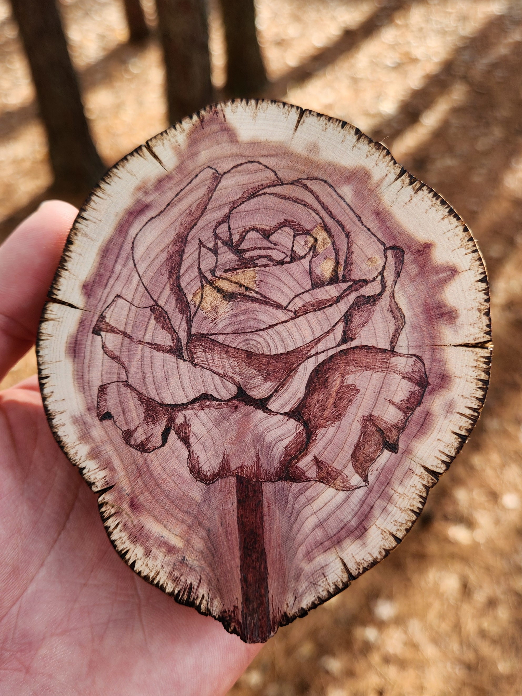

Laura, My Dear!
{kind=link}
Laura is sweet. Laura is fun. Laura is classy. She loves hugs, food, and dark chocolate. And hopefully she likes Daniel a little bit too.
On this website you will find the story of Laura and Daniel, documented according to the highest standards of reliability and verity.
If you will, draw your attention to the right, where an image displays the likeness of a rose burned into a cedar wood cookie. The rose, you might note, is red. Daniel gifted this to Laura for Christmas in 2024, approximately one month into their relationship. As far as he can tell, Laura liked it. This conclusion can be made with some confidence because she hasn’t regifted it, at least not yet.
Daniel is cute. Daniel is wonderful. Daniel is a gallant boy who melts Laura’s heart! Laura does like Daniel, just a little bit. Daniel is charmingly Laura’s… forever and ever and ever and ever :) xoxo
Contents:
- Timeline
- Lovers’ Digest
- Marry Me Chicken
- Blueberry Scones
- Beef Rogan Josh
- Chicken Piccata
- Corn Chowder
- Roasted Tomato Quiche
- Cinnamon Biscuits
- Superbowl Pinwheels
- Chocolate-Covered Strawberries
- Lemon Artichoke Chicken
- Baked Salmon
- Beautiful Omelet
- Honey Chipotle Salmon
- Sweet Potato and Curry Chicken
- Japanese BBQ at Home
- Blueberry Muffins
- Sumo Orange
- Tomato Basil Soup
- Swirly Biscuit
- Tapenade Orzo Chicken
- Kale Ravioli
- Chicken Parmesan
- Vegan Tacos
- Cookies
- Tacos
- Chicken Marsala
- Salmon with Chickpea Kale
- Steak Dinner
- Raspberry Cheese Danish
- Veggies and Eggs
- Chicken Tagine
- Spanish Paella
- International Cookout
- Macarons
- Dan Dan Noodles
- Feasting in CT
- Egg Tarts
- Butternut Squash Soup
- Stone Mountain Breakfast
- Cookout
- Lake James Breakfast
- Chicken Tamale Pie
- Sweet Potato Miso Chicken
- Mediterranean Roasted Veggies
- Coconut Tomato Soup
- Laura’s Ex
- Daniel’s Many Exs
- Summer 2025 Calendar
- Guest Appearances
- Projects
- Adventures
- Jumps
- Curiosities